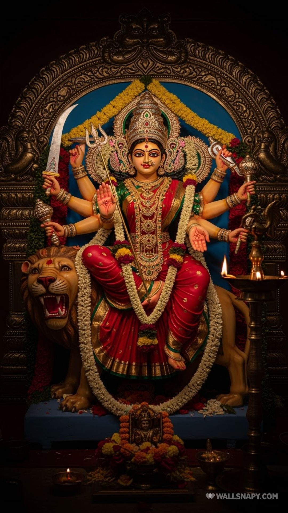

A DUSSEHRA OFFERINGJai Mata Di

A moment of devotion
Enter the temple to begin your offeringॐ
YOU ARE WARMLY INVITED
A moment with
Durga Mata.
Ring the bell. Make an offering.
Let your heart be filled with light.
With warm wishes from Ishani
YOUR VIRTUAL PUJA